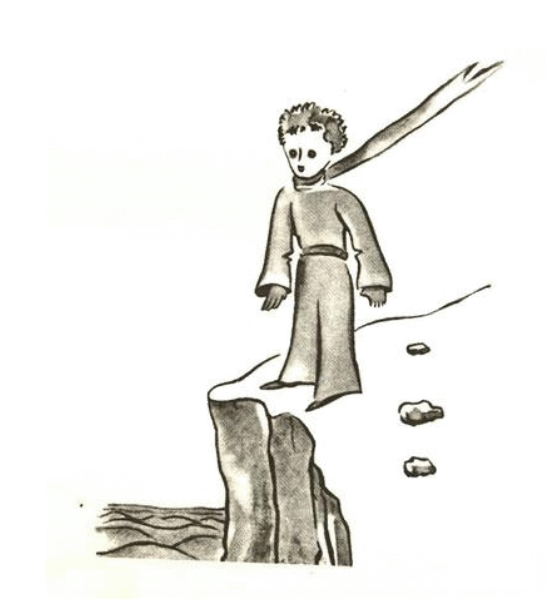
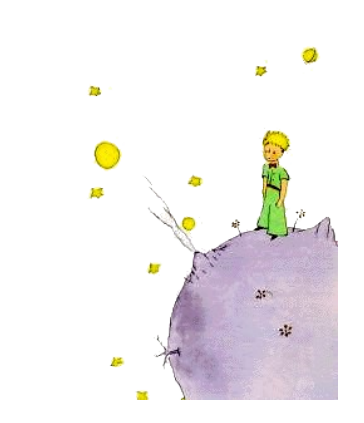

3
Yo besonat mult témpor por comprender de u il es. Li litt prince, qui posit mult questiones a me, semblat nequande escutar. Per hasard captet paroles revelat a me poc a poc su secrete. Talmen il questionat quande il videt por li unesim vez mi avion (yo ne va dessinar mi avion, to vell esser un mult tro complicat afere por me):
"Qual es ti-ta cose?"
"To ne es un cose. It avia. To es un avion. It es mi avion."
E yo esset fier que yo posset dir a il que yo posse aviar. Tande il clamat:
"Qualmen! Esque tu es cadet ex li ciel?"

"Yes", yo dit modestmen.
"Ay! To es vermen amusant ... "
E li litt prince havet un tre fort atacca de rision, quel infuriat me mult. It es important por me que on egarda mi accidentes seriosimen.
Ma il continuat:
"Do anc tu veni del ciel! De quel planete tu es?"
In ti momente yo comprendet li secrete de su presentie e yo questionat hastosimen:
"Do tu veni de un altri planete?"
Ma il ne respondet. Il sucusset solmen mildmen li cap examinante mi avion:
"Certmen, sur ti cose tu ne posse venir de un tre distant loc ..."
E il inmerset se in un revada, quel durat longmen. Poy il prendet mi agne in su tasca e aprofundat se in li aspecte de su tresor.

Vu posse imaginar quant fortmen li alusion pri li "altri planete" devet desquietar me. Do yo efortiat me reciver plu informationes pri to:
"De u tu veni, mi homette? U es tui hem? A u tu vole prender tui agne con te?"
Il respondet pos un pensativ tacentie:
"Li bux, quel tu ha donat a me, have li avantage que it posse servir por li agne quam hem in li nocte."
"Certmen. E si tu es gentil, yo va dar te anc un corde por ligar it durant li jorne. E in plu un palissette."
It semblat que ti proposition ofendet li litt prince.
"Ligar it? Qual strangi idé!"
"Ma si tu ne liga it, it va forcurrer..."
Il anc comensat rider:
"Ma a u it mey currer?"
"A alcú. Rect ... "
Tande li litt prince replicat:
"To fa nequó, it es tant litt che me in hem!"
E fórsan un poc melanolic il adjuntet:
"It ne posse ear lontanmen rect..."